El módulo de Comunicaciones Internas permite administrar y consultar todas aquellas comunicaciones que tienen un CARACTER CORPORATIVO, las cuales se generan y envian entreílas diferentes areas y sedes de la organizacion.
A través de sistema SIMAD podrá crear toda comunicación interna, por medio de un formulario web enviarlo y mantener un registro y control evitando la impresión y disminuyendo el volumen documental.
Haga clic en la barra de menú superior, en comunicaciones/internas/crear y formulario web.
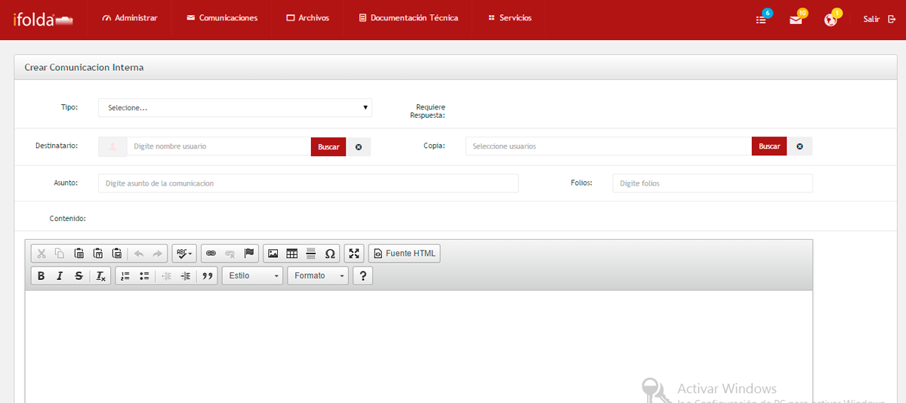
A través de sistema SIMAD podrá crear toda comunicación interna, por medio de una plantilla word y enviarla y mantener un registro y control evitando la impresión y disminuyendo el volumen documental.
Haga clic en la barra de menú superior, en comunicaciones/internas/crear y plantilla word.
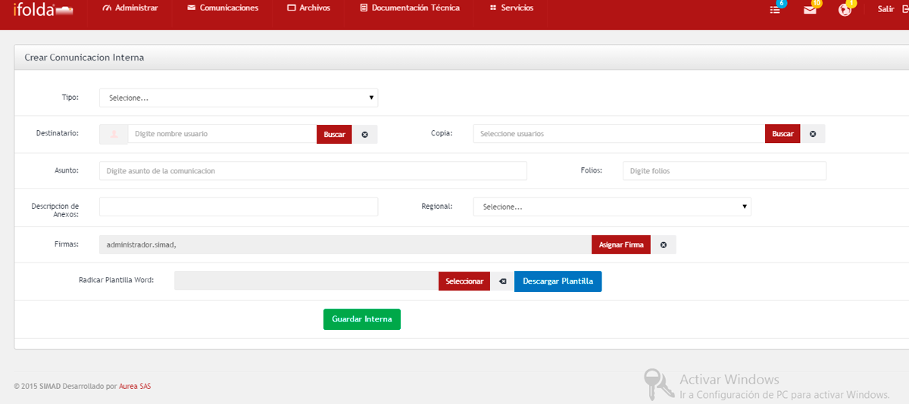
Crear Radicado Plantilla WordIr al Inicio
A través de sistema SIMAD podrá crear toda comunicación interna, por medio de un radicado de plantilla word y enviarla y mantener un registro y control evitando la impresión y disminuyendo el volumen documental.
Haga clic en la barra de menú superior en comunicaciones/internas/crear y radicado plantilla word.
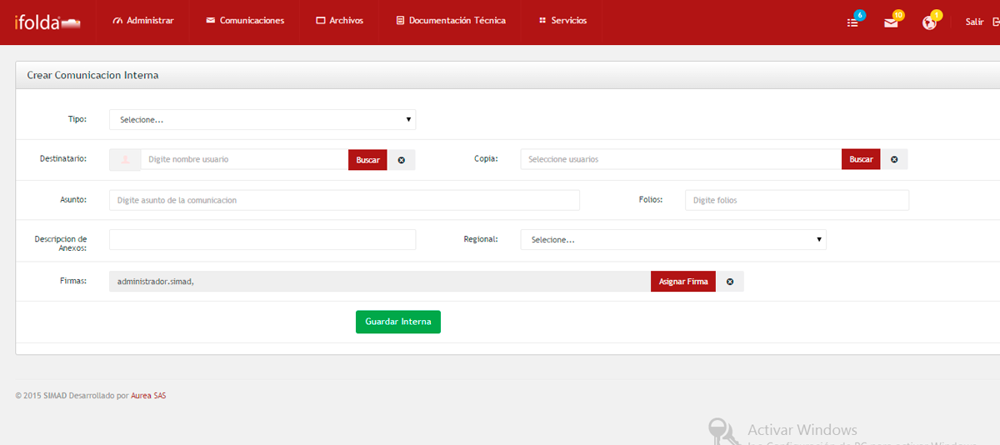
Con SIMAD se consulta en línea la correspondencia interna teniendo un control actualizado que permite dar respuestas rápidas y efectivas.
- Usted puede hacer una consulta por criterios
Para hacer una consulta de las comunicaciones internas recibidas realice los siguientes pasos:
Haga clic en el menú lateral/icono Consultar y seleccione uno o más criterios.
Escriba el nombre del radicado.
Seleccione la Dependencia de origen.
Escriba el asunto.
Escriba el contenido.
Seleccione, Destino, Firma, Proyectó, Copia a, Estado.
Seleccione la fecha de creación.
Seleccione Entregado, Periódo.
Seleccione Fecha envío guía, Marca y Ordenar Por.
Haga clic en consultar.
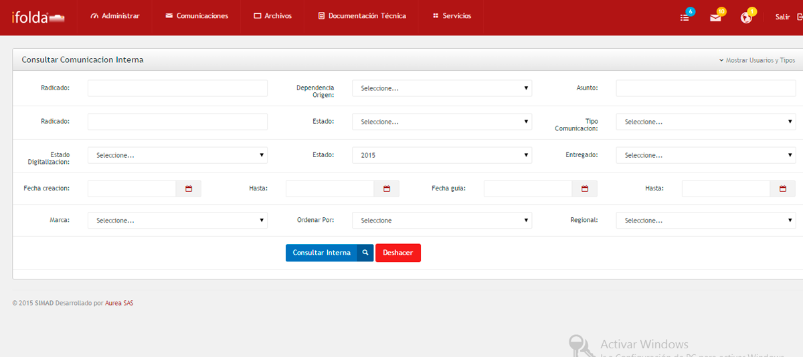
En la Bandeja de Entrada usted podrá visualizar todas las comunicaciones internas donde usted es el destinatario.
Para ver las comunicaciones en la bandeja de entrada realice los siguientes pasos:
Haga clic en el menú superior, icono comunicaciones, internas, Bandeja de Entrada.
- Para ver los detalles y opciones de una comunicación haga clic en el número de radicado.
Seleccione cualquiera de las siguientes opciones.
Guardar marca: Marque la correspondencia que desea guardar, haga clic en guardar para luego ser consultada.
Marcar todos: Haga clic en marcar para guardar, borrar, entregar o exportar la correspondencia.
Desmarcar todos: Haga clic en desmarcar para quitar las marcas de la correspondencia que el usuario guardo anteriormente.
Borrar: Marque la correspondencia que desea borrar, haga clic en borrar para la correspondencia que desea quitar de la bandeja.
Restaurar: Haga clic en restaurar para traer nuevamente las comunicaciones borradas.
Exportar: Marque la correspondencia que desea exportar, haga clic en exportar para enviar los registros a un archivo de Excel para ser impresos.
Haga clic en cualquiera de las diferentes opciones.
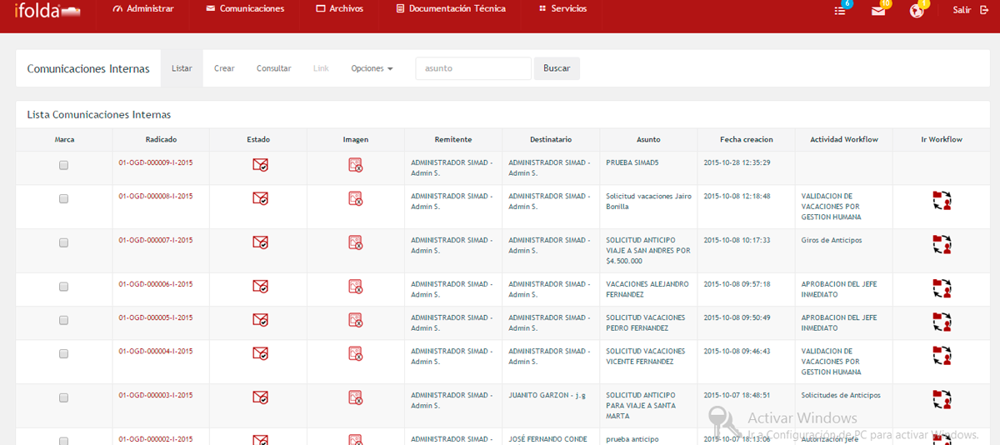
En la Bandeja de Salida usted podrá visualizar todas las comunicaciones internas donde usted es el remitente.
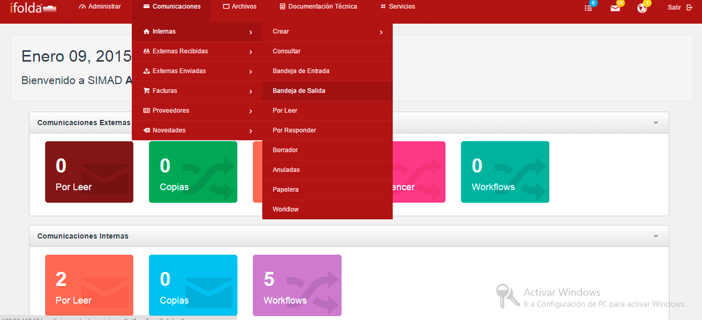
Para ver las comunicaciones en la bandeja de salida realice los siguientes pasos:
Haga clic en el menú superior, comunicaciones, internas, Bandeja de Salida.
- Para ver los detalles y opciones de una comunicación haga clic en el número de radicado.
Seleccione cualquiera de las opciones de la bandela de salida.
Guardar marca: Marque la correspondencia que desea guardar, haga clic en guardar para luego ser consultada.
Marcar todos: Haga clic en marcar para guardar, borrar, entregar o exportar la correspondencia.
Desmarcar todos: Haga clic en desmarcar para quitar las marcas de la correspondencia que el usuario guardo anteriormente.
Borrar: Marque la correspondencia que desea borrar, haga clic en borrar para la correspondencia que desea quitar de la bandeja.
Restaurar: Haga clic en restaurar para traer nuevamente las comunicaciones borradas.
Exportar: Marque la correspondencia que desea exportar, haga clic en exportar para enviar los registros a un archivo de Excel para ser impresos.
Haga clic en cualquiera de las diferentes opciones.
Muestra el listado de todas las comunicaciones internas que están por ser leídas con el símbolo del sobre de carta cerrada.
Para ver las comunicaciones internas realice los siguientes pasos:
Haga clic en el menú lateral, icono Por leer .
- Para ver los detalles y opciones de una comunicación haga clic en el número de radicado.
Opciones de Por leer
Guardar marca: Marque la correspondencia que desea guardar, haga clic en guardar para luego ser consultada.
Marcar todos: Haga clic en marcar para guardar, borrar, entregar o exportar la correspondencia.
Desmarcar todos: Haga clic en desmarcar para quitar las marcas de la correspondencia que el usuario guardo anteriormente.
Borrar: Marque la correspondencia que desea borrar, haga clic en borrar para la correspondencia que desea quitar de la bandeja.
Restaurar: Haga clic en restaurar para traer nuevamente las comunicaciones borradas.
Exportar: Marque la correspondencia que desea exportar, haga clic en exportar para enviar los registros a un archivo de Excel para ser impresos.
Haga clic en cualquiera de las diferentes opciones.
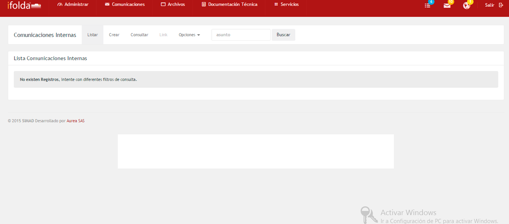
Muestra el listado de todas las comunicaciones internas que están por responder con el símbolo del sobre de carta abierto.
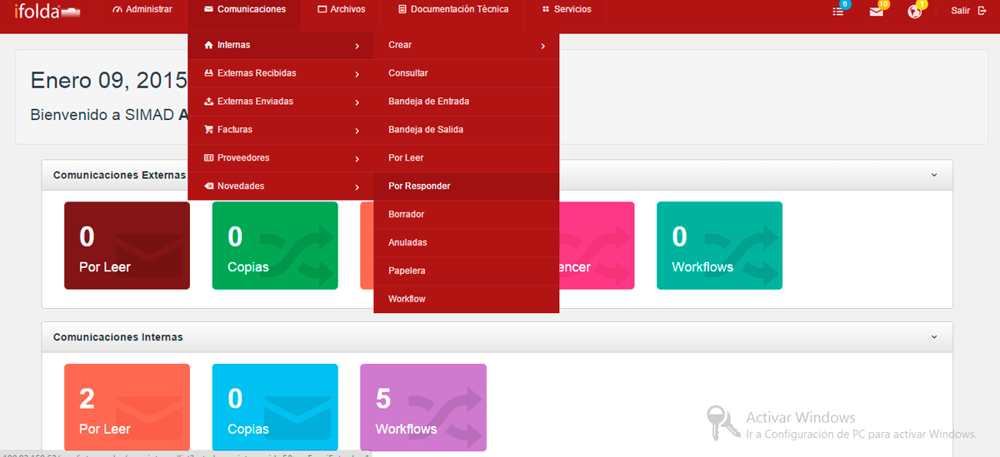
Para ver las comunicaciones internas por responder realice los siguientes pasos:
Haga clic en el menú lateral, icono Por responder.
- - Para ver los detalles y opciones de una comunicación haga clic en el número de radicado.
Seleccione cualquiera de las opciones por responder
Guardar marca: Marque la correspondencia que desea guardar, haga clic en guardar para luego ser consultada.
Marcar todos: Haga clic en marcar para guardar, borrar, entregar o exportar la correspondencia.
Desmarcar todos: Haga clic en desmarcar para quitar las marcas de la correspondencia que el usuario guardo anteriormente.
Borrar: Marque la correspondencia que desea borrar, haga clic en borrar para la correspondencia que desea quitar de la bandeja.
Restaurar: Haga clic en restaurar para traer nuevamente las comunicaciones borradas.
Exportar: Marque la correspondencia que desea exportar, haga clic en exportar para enviar los registros a un archivo de Excel para ser impresos.
Muestra todas las comunicaciones internas que han sido creadas pero que aún no se han radicado.
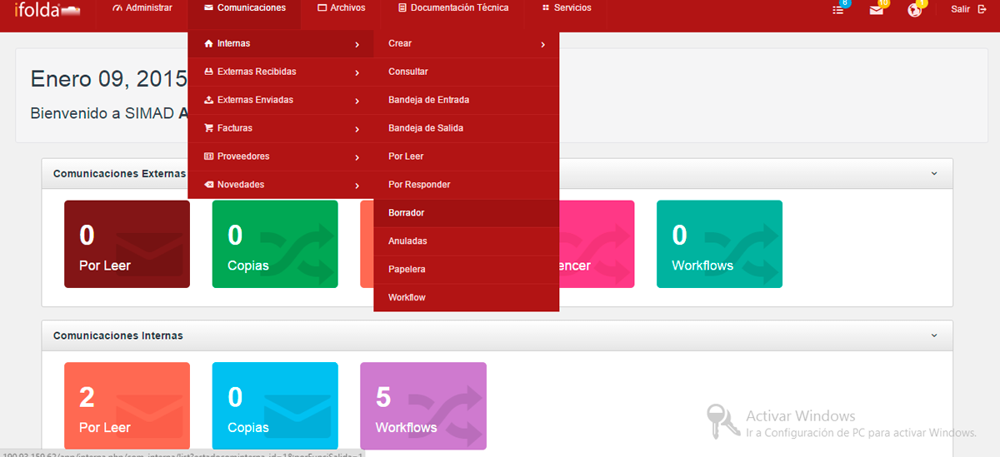
Para ver las comunicaciones en borrador realice los siguientes pasos:
Haga clic en el menú lateral, icono Borrador.
- Para ver los detalles y opciones de una comunicación haga clic en el número de radicado.
Guardar marca: Marque la correspondencia que desea guardar, haga clic en guardar para luego ser consultada.
Marcar todos: Haga clic en marcar para guardar, borrar, entregar o exportar la correspondencia.
Desmarcar todos: Haga clic en desmarcar para quitar las marcas de la correspondencia que el usuario guardo anteriormente.
Borrar: Marque la correspondencia que desea borrar, haga clic en borrar para la correspondencia que desea quitar de la bandeja.
Restaurar: Haga clic en restaurar para traer nuevamente las comunicaciones borradas.
Exportar: Marque la correspondencia que desea exportar, haga clic en exportar para enviar los registros a un archivo de Excel para ser impresos.
Haga clic en cualquiera de las diferentes opciones.
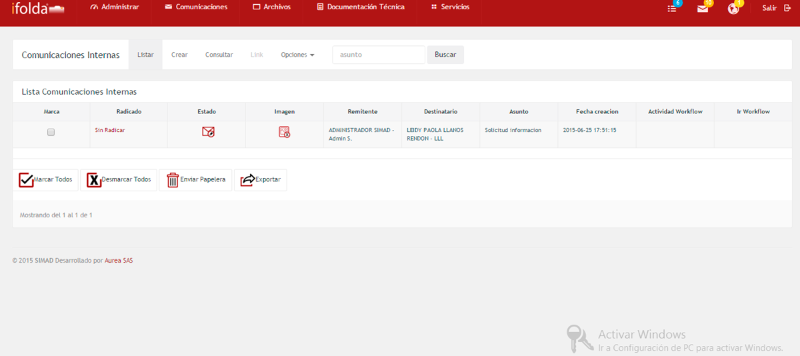
Muestra todas las comunicaciones internas que han sido anuladas, la fecha y el motivo..
Para ver las comunicaciones internas anuladas realice los siguientes pasos:
Haga clic en el menú lateral, icono Anuladas.
- Para ver los detalles y opciones de una comunicación haga clic en el número de radicado.
Opciones de Anuladas
Guardar marca: Marque la correspondencia que desea guardar, haga clic en guardar para luego ser consultada.
Marcar todos: Haga clic en marcar para guardar, borrar, entregar o exportar la correspondencia.
Desmarcar todos: Haga clic en desmarcar para quitar las marcas de la correspondencia que el usuario guardo anteriormente.
Borrar: Marque la correspondencia que desea borrar, haga clic en borrar para la correspondencia que desea quitar de la bandeja.
Restaurar: Haga clic en restaurar para traer nuevamente las comunicaciones borradas.
Exportar: Marque la correspondencia que desea exportar, haga clic en exportar para enviar los registros a un archivo de Excel para ser impresos.
Haga clic en cualquiera de las diferentes opciones.
Permite ver todas las comunicaciones internas que han sido enviadas de las otras bandejas a la papelera.
Para ver las comunicaciones internas borradas realice los siguientes pasos:
Haga clic en el menú lateral/icono Papelera.
- Para ver los detalles y opciones de una comunicación haga clic en el número de radicado.
Guardar marca: Marque la correspondencia que desea guardar, haga clic en guardar para luego ser consultada.
Marcar todos: Haga clic en marcar para guardar, borrar, entregar o exportar la correspondencia.
Desmarcar todos: Haga clic en desmarcar para quitar las marcas de la correspondencia que el usuario guardo anteriormente.
Borrar: Marque la correspondencia que desea borrar, haga clic en borrar para la correspondencia que desea quitar de la bandeja.
Restaurar: Haga clic en restaurar para traer nuevamente las comunicaciones borradas.
Exportar: Marque la correspondencia que desea exportar, haga clic en exportar para enviar los registros a un archivo de Excel para ser impresos.
Haga clic en cualquiera de las diferentes opciones.
Permite ver todas las comunicaciones internas que estan dentro de un flujo de trabajo.
Para ver las comunicaciones internas que estan con workflow realice los siguientes pasos:
Haga clic en el menú superior en comunicaciones/internas/workflow.
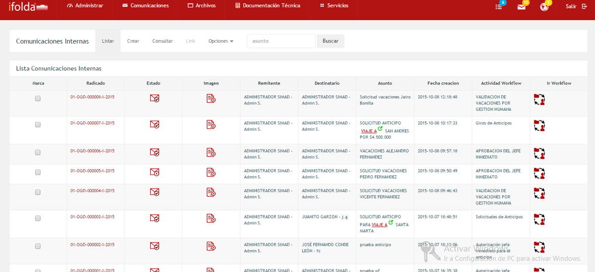